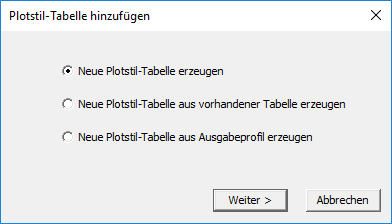
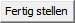
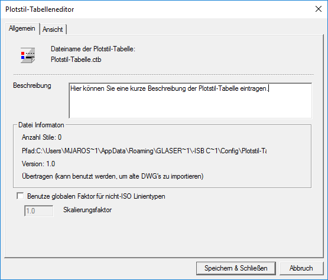
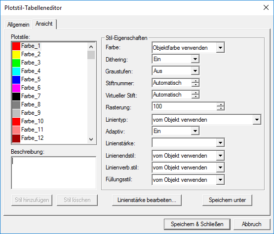
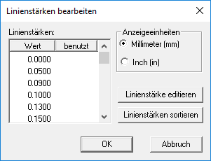

→ Registerkarte Optionen → Plotstil-Tabelle → Neu
Assistent zum Erstellen einer neuen Plotstil-Tabelle.
Plotstile sind Objekteigenschaften von AutoCAD-Zeichnungen. Mithilfe eines Plotstils können Eigenschaften (Farbe, Linientyp, Linienstärke) überschrieben werden. Holen Sie ggf. alle erforderlichen Informationen bei Ihrem Auftraggeber ein.
 |
Wählen Sie eine Option und klicken Sie auf Weiter >, um die benötigten Informationen anzugeben.
Optionen
Neue Plotstil-Tabelle erzeugen
Farbabhängige Plotstil-Tabelle (Dateiformat *.ctb)
–Enthält 255 Plotstile. Jeder Plotstil ist einer Farbe zugeordnet.
–Eigenschaften werden anhand der Objektfarbe definiert. Alle schwarzen Objekte z. B. werden mit denselben Eigenschaften gezeichnet.
–Plotstile können weder hinzugefügt noch gelöscht werden.
Benannte Plotstil-Tabelle (Dateiformat *.stb)
–Enthält benutzerdefinierte Plotstile.
–Benannte Plotstile sind nicht von der Objektfarbe abhängig. Dadurch kann jedem Objekt ein Plotstil zugeordnet werden.
–Plotstile können hinzugefügt und gelöscht werden. (Bis auf den Plotstil Normal).
Neue Plotstil-Tabelle aus vorhandener Tabelle erzeugen
§Geben Sie den Namen einer vorhandenen Plotstil-Tabelle an.
§Nehmen Sie die notwendigen Änderungen vor und geben Sie den Namen für die neue Plotstil-Tabelle an.
Neue Plotstil-Tabelle aus Ausgabeprofil erzeugen
Übernimmt die Ausgabeparameter eines vorhandenen Ausgabeprofils.
§Wählen Sie ein Plotprofil aus den Ausgabeprofilen.
§Geben Sie den Namen für die neue Plotstil-Tabelle an.
Nach Eingabe des Namens für die neue Plotstil-Tabelle können Sie diese sofort verwenden oder zunächst mittels des Plotstil-Tabelleneditors bearbeiten.
§Um die Plotstil-Tabelle zu bearbeiten:
Klicken Sie auf Plotstil-Tabelleneditor starten. Der Dialog Plotstil-Tabelleneditor wird geöffnet.
Dialogbeschreibung siehe weiter unten.
§Um die neue Plotstil-Tabelle zu verwenden:
Klicken Sie auf

.Die neue Plotstil-Tabelle wird übernommen.
Plotstil-Tabelleneditor (Dialogbeschreibung)
Konfiguration von Plotstilen.
Registerkarte Allgemein
Allgemeine Informationen über die Plotstil-Tabelle.

Dateiname der Plotstil-Tabelle
Zeigt den Dateinamen der zu bearbeitenden Plotstil-Tabelle an.
Beschreibung
Zeigt eine Beschreibung der Plotstil-Tabelle an.
Datei Information
Zeigt die Anzahl der Plotstile, den Dateipfad der Plotstil-Tabelle und die Versionsnummer des Plotstil-Tabelleneditors an.
Benutze globalen Faktor für nicht-ISO Linientypen
þ |
Alle nicht-ISO Linientypen von Objekten werden mit dem unter Skalierungsfaktor eingegebenen Wert skaliert. |
¨ |
Es findet keine Skalierung der nicht-ISO Linientypen statt. Die Einstellung Skalierungsfaktor ist deaktiviert. |
Registerkarte Ansicht
Je nachdem, ob Sie eine STB- oder CTB-Datei geöffnet haben, stehen Ihnen auf dieser Registerkarte verschiedene Konfigurationsmöglichkeiten der Plotstil-Tabelle zur Verfügung.

Plotstile
Bei einer farbabhängigen Plotstil-Tabelle (*.CTB) können Sie für jede der 255 Farben einen Plotstil erstellen. Wählen Sie den entsprechenden Plotstil aus und ändern Sie dessen Attribute im Dialogbereich Stil-Eigenschaften.
Beschreibung
Zeigt eine Beschreibung des markierten Plotstils (z. B. "Farbe_1") an.
Stil-Eigenschaften
Attribute, mit denen die Objekte ausgegeben werden sollen. Wenn Sie die Parameter aus dem ‑isb cad‑ Ausgabeprofil übernommen haben, sind die bekannten Einstellungen bereits vorgenommen.
Farbe
Definiert die Farbe, mit der ein Objekt geplottet wird. Als Voreinstellung ist die Farbe Objektfarbe verwenden eingestellt.
Wenn Sie eine Plotstil-Farbe zuweisen, überschreibt diese Farbe die Objektfarbe beim Plotten.
§Klicken Sie auf  , um eine Liste mit einer Farbauswahl aufzuklappen. Aus dieser Liste können Sie die gewünschte Farbe auswählen. Eine größere Farbauswahl finden Sie, wenn Sie an das Ende der Liste scrollen und die Option weitere... anklicken. Die Option weitere... öffnet einen Farbauswahl-Dialog, in dem Sie voreingestellte Farben auswählen oder eigene Farben definieren können.
, um eine Liste mit einer Farbauswahl aufzuklappen. Aus dieser Liste können Sie die gewünschte Farbe auswählen. Eine größere Farbauswahl finden Sie, wenn Sie an das Ende der Liste scrollen und die Option weitere... anklicken. Die Option weitere... öffnet einen Farbauswahl-Dialog, in dem Sie voreingestellte Farben auswählen oder eigene Farben definieren können.
Abhängig von Ihren gewählten Druckeinstellungen wird die Zeichnung entweder farbig, schwarzweiß oder monochrom geplottet.
Dithering
Die Option "Dithering" ist ein Verfahren, mit dem der Plotter durch Punktmuster auf Basis der primären Druckerfarben weitere Farben und Abstufungen erzeugt. Dadurch entsteht der Eindruck einer höheren Farbtiefe. Das Dithering ist nur verfügbar, wenn Sie entweder die Objektfarbe gewählt oder eine Plotstil-Farbe zugeordnet haben.
Graustufe
Die Zeichnung wird in Graustufen ausgegeben.
Stiftnummer
Gibt an, welcher Stift vom Ausgabegerät für das Plotten der Zeichenobjekte benutzt werden soll.
Sie können eine Stiftnummer von 1 bis 32 auswählen.
Virtueller Stift
Zahlreiche Plotter, die keine Stifte verwenden, können mit virtuellen Stiften einen Stiftplotter simulieren.
Wählen Sie einen von 255 Stiften oder geben Sie 0 ein bzw. wählen Sie in der Drop-Down-Liste die Option Automatisch, wenn die Zuweisung der virtuellen Stifte anhand der in ISBCAD eingestellten Farbe erfolgen soll.
|
Hinweis: |
|
Virtuelle Stifte können nur für Nicht-Stiftplotter benutzt werden. Außerdem müssen Nicht-Stiftplotter für virtuelle Stifte konfiguriert sein. |

Rasterung
Definiert die Farbintensität der Druckausgabe. Wählen Sie einen Wert zwischen 0 und 100. Wenn Sie den Wert auf 100 einstellen, erfolgt die Ausgabe mit der maximalen Farbigkeit.
(Nur wirksam, wenn die Option Dithering eingestellt ist.)
Linientyp
Auswahl des Linientyps, der für die Ausgabe des Zeichenobjektes verwendet werden soll. Der gewählte Linientyp überschreibt beim Plotten den originären Linientyp des Zeichenobjektes.
Als Voreinstellung ist die Option vom Objekt verwenden eingestellt.
Adaptiv
Stellen Sie diese Option auf "Ein", wenn das Linientypmuster vollständig angezeigt werden soll. Dadurch wird die Skalierung eines Linientyps angepasst, so dass die Linientypmuster vollständig angezeigt werden.
Aktivieren Sie diese Option, wenn das vollständige Linientypmuster wichtiger ist als die korrekte Skalierung der Linientypen.
Linienstärke
Auswahl der Linienstärke, die für die Ausgabe des Zeichenobjektes verwendet werden soll. Die gewählte Linienstärke überschreibt beim Plotten die originäre Linienstärke des Zeichenobjektes.
Als Voreinstellung ist die Option vom Objekt verwenden eingestellt.
Linienendstil
Auswahl eines Linienendstils, z B. "Naht", "Quadratisch" usw. Der gewählte Linienendstil überschreibt beim Plotten den originären Linienendstils des Zeichenobjektes.
Als Voreinstellung ist die Option vom Objekt verwenden eingestellt.
Linienverb.-stil
Auswahl eines Linienverbindungsstils, z. B. "Schrägschnitt", "Angeschrägt" usw. Der gewählte Linienverbindungsstil überschreibt beim Plotten den originären Linienverbindungsstil des Zeichenobjektes.
Als Voreinstellung ist die Option vom Objekt verwenden eingestellt.
Füllungsstil
Auswahl eines Füllungsstils, z. B. "Solid", "Schachbrett" usw. Der gewählte Füllungsstil überschreibt beim Plotten den originären Füllungsstil des Zeichenobjektes.
Schaltflächen
Stil hinzufügen
Hinzufügen eines neuen Plotstils. Nur aktiv bei der Bearbeitung von benannten Plotstilen (*.stb).
Stil löschen
Löscht den gewählten Plotstil aus der Tabelle.
Speichern unter
Speichern der Plotstil-Tabelle unter einem neuen Namen. Öffnet die Dateiauswahl mit dem ISBCAD Konfigurationsordner (Standardverzeichnis für Plotstil-Tabellen).
Linienstärke bearbeiten
Konfiguration der Linienstärken. Öffnet den Dialog Linienstärken bearbeiten.
Linienstärken bearbeiten (Dialogbeschreibung)

Linienstärken
In der ersten Spalte (Werte) werden Strichbreiten aufgelistet. In der zweiten Spalte (benutzt) sind die benutzten Breiten durch einen Haken gekennzeichnet.
Anzeigeeinheiten
Sie können zwischen Millimeter und Inch wählen.
Linienstärke editieren
Die markierte Zeile wird zur Eingabe. Geben Sie die gewünschte Breite in der gewählten Einheit ein.
Linienstärke sortieren
Wenn die Tabelle nicht sortiert erscheint, können Sie die Tabelle mit dieser Funktion sortieren.